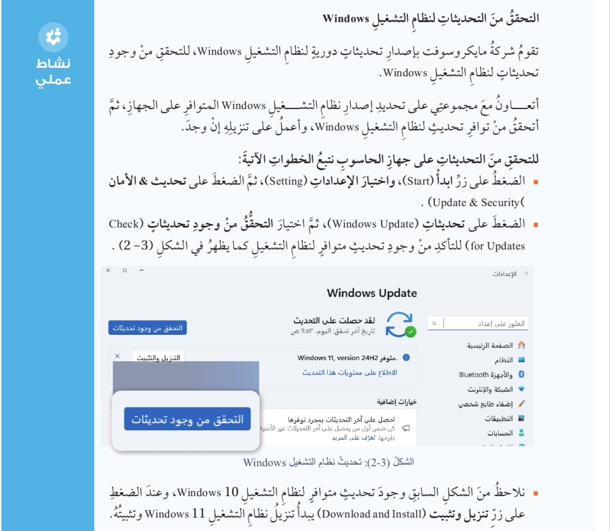
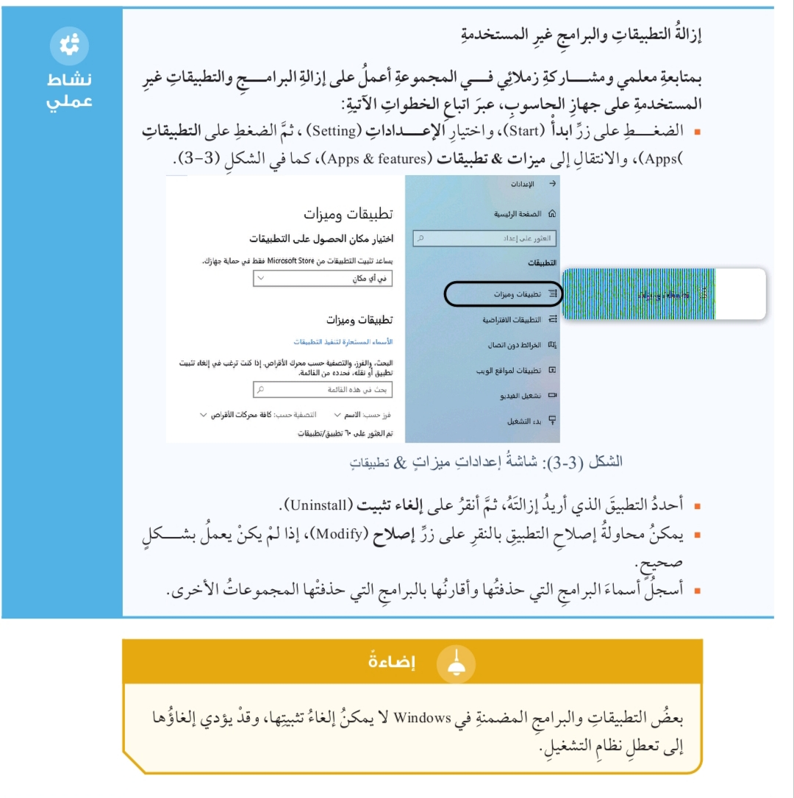
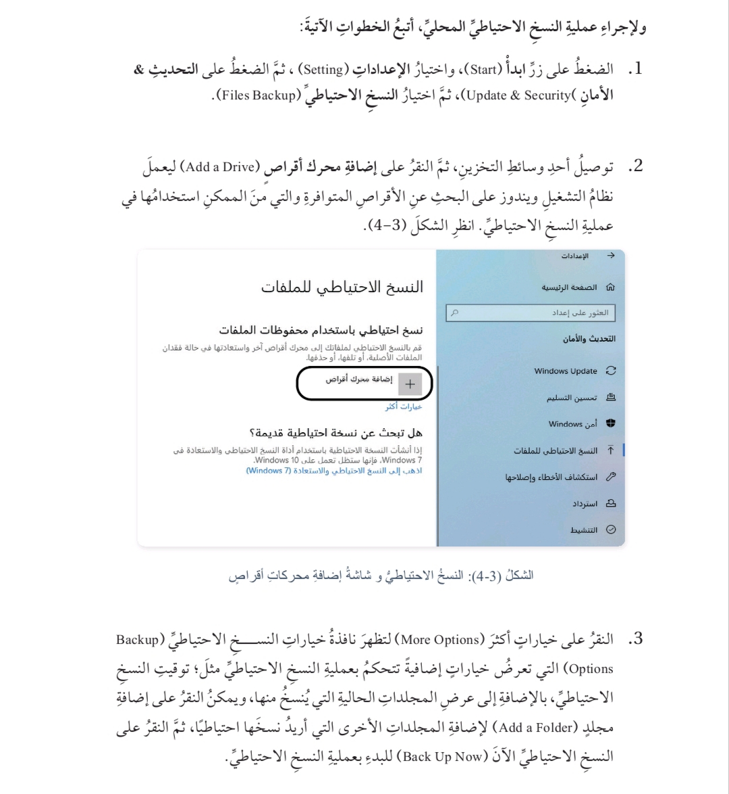
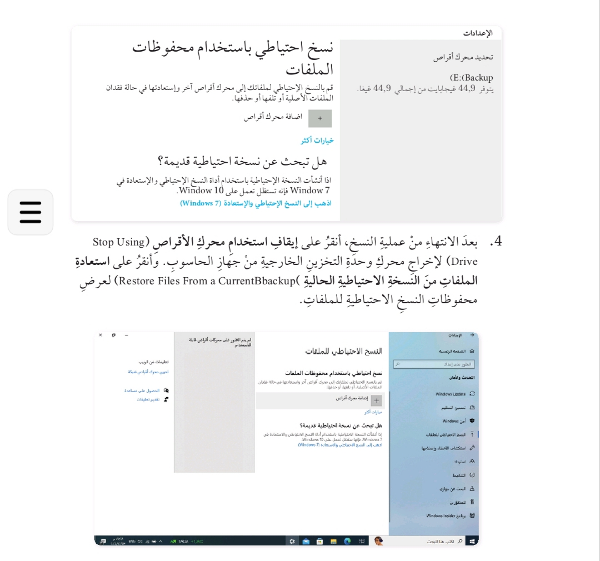
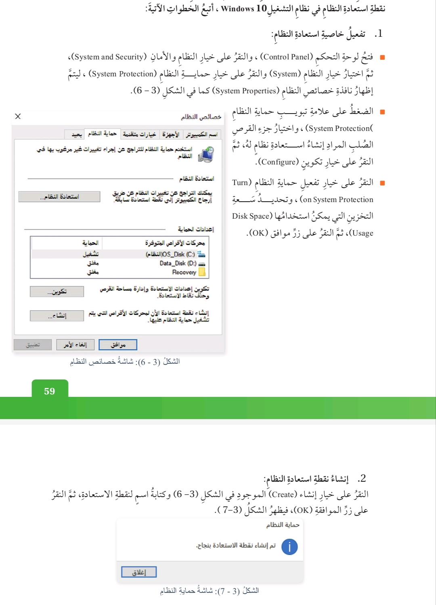
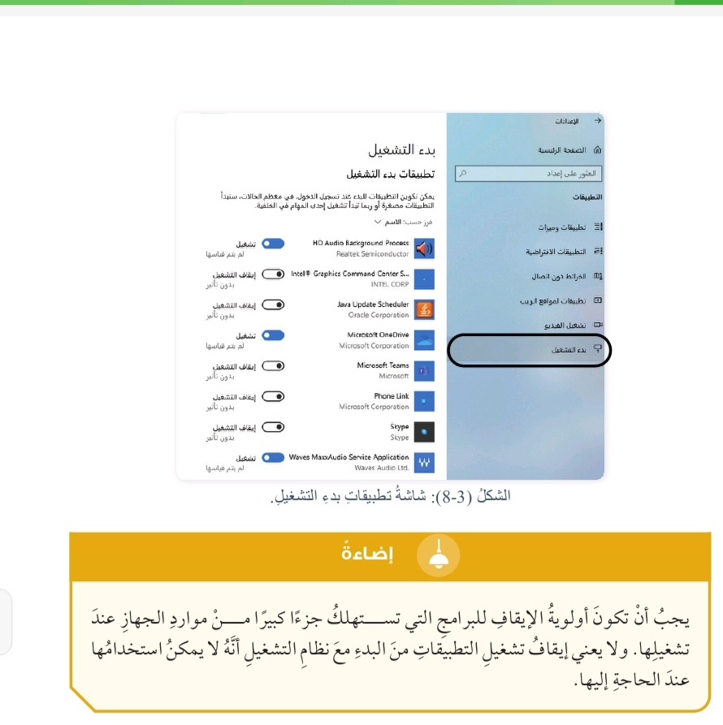
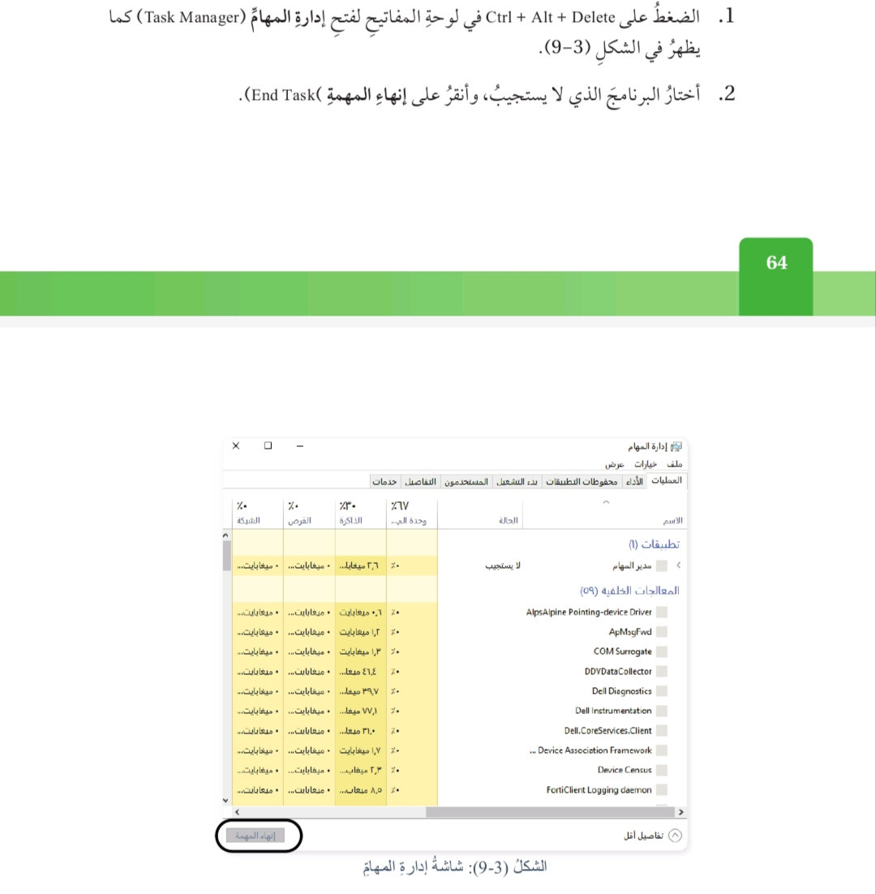

مكونات جهاز الحاسوب
ما هي مكونات جهاز الحاسوب؟
يتكون جهاز الحاسوب من:
- مكونات مادية.
- مكونات برمجية.
الأعطال قد تصيب ماذا؟
قد تصيب الأعطال:
- المكونات المادية.
- المكونات البرمجية.
تُعد صيانة البرمجيات مكملة لصيانة المكونات المادية.
نشاط: تحليل مشكلة برمجية
السيناريو
خالد طالب في الجامعة يعمل على إعداد بحث لمشروعه، وفي أثناء إجراء تعديلات نهائية على البحث باستخدام برنامج Microsoft Word توقف الجهاز عن الطباعة فجأة، وظهرت رسالة تبين عدم استجابة البرنامج، وتطلب إنهاء العمل أو إعادة تشغيل الجهاز.ما تبعات هذه المشكلة وما أثرها في عمل خالد؟
- توقف الطباعة يعني أن بحثه لن يطبع في الوقت المحدد.
- فقدان التعديلات الأخيرة إذا لم يكن قد حفظ الملف قبل تعليق البرنامج.
- ضياع جزء من جهده ووقته، مما يسبب له ضغطًا نفسيًا خصوصًا إذا كان موعد التسليم قريبًا.
ما التصرف الصحيح الذي يجب أن يقوم به خالد؟
- الانتظار قليلًا، فقد يستجيب البرنامج بعد فترة.
- إذا استمرت المشكلة، يختار إنهاء البرنامج من الرسالة الظاهرة.
- إعادة فتح برنامج Word والتحقق مما إذا كان قد حفظ نسخة احتياطية (AutoRecover).
- إعادة تشغيل الجهاز إذا استمر التعليق.
- حفظ العمل بشكل دوري لاحقًا لتفادي فقدان البيانات.
هل يمكن أن يكون سبب الخلل عطلًا في المكونات المادية؟ أبرر إجابتي.
في الغالب لا؛ لأن المشكلة مرتبطة ببرنامج Word أو نظام التشغيل، وقد تكون بسبب استهلاك كبير للذاكرة RAM، أو تضارب بين البرامج، أو خطأ في تعريف الطابعة، أو امتلاء قائمة الانتظار الخاصة بها.
لكن إذا تكررت المشكلة بشكل مستمر أو مع برامج أخرى، فقد يكون السبب الذاكرة RAM أو القرص الصلب، وهما من المكونات المادية.
ما إجراءات الصيانة التي تحافظ على المكونات البرمجية؟
- تحديث البرامج ونظام التشغيل Windows.
- إضافة مهام جديدة.
- تصحيح الأخطاء البرمجية.
- تحسين الأداء العام لجهاز الحاسوب.
- إزالة البرامج الضارة والفيروسات وغيرها.
برنامج الفحص الذاتي عند التشغيل POST
وضح المقصود ببرنامج POST.
هو برنامج الفحص الذاتي عند التشغيل
Power on Self Test،
ويُرمز له بالاختصار POST. يوجد في ذاكرة القراءة فقط ROM، ومهمته فحص جهاز الحاسوب ومكوناته عند التشغيل.
ما مهمة برنامج الفحص POST؟
فحص جهاز الحاسوب ومكوناته عند التشغيل، ثم إعطاء معلومات عن الأعطال التي حدثت في الجهاز.
ما آلية عمل برنامج POST؟
يفحص البرنامج القرص الصلب، وذاكرة القراءة فقط ROM، وذاكرة الوصول العشوائي RAM، ومنافذ الإدخال والإخراج، ولوحة المفاتيح.
وهو المسؤول عن الصوت القصير الصادر عند التشغيل. وإذا واجه مشكلة أثناء الفحص، فقد يصدر أصواتًا على شكل نغمات متقطعة أو مستمرة، أو يعرض الأخطاء على شكل نص تحذيري يسهل على المستخدم فهمه.
كيف يعرض برنامج POST الأخطاء في النظام؟
- يصدر أصواتًا على شكل نغمات متقطعة أو مستمرة.
- قد يعرض الأخطاء على الشاشة على شكل نص تحذيري.
أنواع رسائل الخطأ التي يصدرها POST
أولًا: رسائل على شكل أصوات (Beep Codes)
يصدر الجهاز أصواتًا من السماعة الداخلية عند وجود عطل قبل تحميل نظام التشغيل.- صوت صفير واحد طويل ومتكرر: قد يشير إلى مشكلة في الذاكرة RAM.
- صفيران قصيران: قد يشيران إلى خلل في بطاقة الشاشة.
- صفير مستمر: قد يشير إلى مشكلة في مزود الطاقة أو اللوحة الأم.
ثانيًا: رسائل مكتوبة على الشاشة (Error Messages)
تظهر على شاشة الحاسوب عند فشل POST في فحص أحد المكونات.- Keyboard Not Found: لم يتم العثور على لوحة المفاتيح.
- CMOS Battery Failure: بطارية حفظ الإعدادات ضعيفة أو فارغة.
- Disk Boot Failure: الجهاز غير قادر على إيجاد قرص الإقلاع.

مسببات أعطال المكونات البرمجية
إضاءة
عندما يصادفني عطل برمجي في جهاز الحاسوب، آخذ بعض الوقت للتفكير في سبب المشكلة، وقبل أن أتخذ أي إجراء، أحاول أن أجيب عن الأسئلة الآتية:- هل قمت بتنزيل أي برنامج مؤخرًا، أو تحميل برنامج من خلال شبكة الإنترنت؟
- هل قمت بإضافة أو تحديث مكون من المكونات المادية؟
- هل عرّفت بطاقة شاشة أو غيرها؟
- هل قمت بحذف برنامج مؤخرًا؟
نشاط جماعي
أبحث بالتعاون مع أفراد مجموعتي في المواقع الإلكترونية الموثوقة عن مسببات أخرى لأعطال المكونات البرمجية، ثم نشارك النتائج التي نتوصل إليها مع المجموعات الأخرى في الصف.- انقطاع الكهرباء أو إيقاف الجهاز بشكل مفاجئ، مما يؤدي إلى تلف ملفات النظام.
- تلف ملفات النظام أو ملفات التمهيد Boot Files.
- امتلاء القرص الصلب بالملفات المؤقتة والمخلفات دون تنظيف.
- استخدام نسخ غير أصلية أو مفعلة بطرق غير شرعية من أنظمة التشغيل أو البرامج.
- عدم تثبيت التحديثات الأمنية للبرامج الأساسية مثل المتصفحات أو برامج الحماية.
- تثبيت تعريفات غير متوافقة مع النظام.
- العبث بإعدادات النظام أو تعديلها بشكل غير صحيح، مثل السجل Registry في Windows.
- ضعف أو خلل في برنامج الحماية، أو عدم وجود مضاد فيروسات أصلًا.
- تشغيل برامج ثقيلة على جهاز ذي مواصفات ضعيفة، مما يسبب بطء وتعطل البرمجيات.
- حذف ملفات مهمة بالخطأ، مثل ملفات DLL أو ملفات النظام.
ما المقصود بصيانة المكونات البرمجية لجهاز الحاسوب؟
هي إجراءات دورية تُطبّق على البرامج ونظام التشغيل بهدف المحافظة على كفاءتها.
ما الهدف من تطبيق إجراءات الصيانة الدورية للبرمجيات؟
تحسين عمل الجهاز، وزيادة سرعته، ومعالجة العديد من المشكلات.
ما العلاقة بين الصيانة البرمجية وعلاج المشكلات؟
الصيانة تساعد على الوقاية من المشكلات، وكذلك علاج المشكلات القائمة.
تتطلب صيانة المكونات البرمجية لجهاز الحاسوب اتخاذ إجراءات يمكن تطبيقها بصورة دورية، تعمل على تحسين عمله وزيادة سرعته، بالإضافة إلى إمكانية استخدامها علاجًا للعديد من المشكلات.
إجراءات صيانة المكونات البرمجية
أولًا: تحديث نظام التشغيل Windows
وضح المقصود بنظام التشغيل Windows.
هو برنامج أساسي يقوم بإدارة جهاز الحاسوب، ويعمل وسيطًا بين المستخدم ومكونات الحاسوب.
علل: يجب الحرص على تحديث نظام التشغيل كلما توافر تحديث له.
تتعلق معظم أعطال البرمجيات بنظام التشغيل Windows نفسه، وتتلخص أهمية تحديثه فيما يأتي:
- سد الثغرات الأمنية وحماية النظام من الاختراق.
- تحسين أداء النظام وإضافة ميزات جديدة.
- علاج المشكلات التقنية والأخطاء البرمجية الموجودة في الإصدارات القديمة.

نشاط بحث
أبحث في المواقع الإلكترونية الموثوقة عن أهم المزايا الجديدة التي يوفرها نظام التشغيل Windows 11، ثم أشارك النتائج مع زملائي عبر اللوح الرقمي التفاعلي Padlet.أهم مزايا Windows 11
- تصميم واجهة حديثة وجاذبة: قائمة ابدأ جديدة في منتصف الشاشة، وزوايا نوافذ مستديرة، وتصميم مبسط وأنيق، ودعم الوضع الداكن والشفافية.
- تحسين الأداء والإنتاجية: سرعة أكبر في التشغيل وإدارة التطبيقات، ودعم أفضل للمعالجات الحديثة والتخزين SSD، وميزة Snap Layouts وSnap Groups لترتيب النوافذ.
- تكامل أفضل مع الألعاب: دعم DirectStorage لتسريع تحميل الألعاب، وميزة Auto HDR لتحسين جودة الرسوميات.
- تكامل مع Microsoft Teams: توفير أدوات للتواصل مباشرة.
- تجربة لمس محسنة: دعم أفضل للأجهزة اللوحية والأجهزة القابلة للتحويل، وتحسين لوحة المفاتيح اللمسية والقلم الرقمي.
- متجر Microsoft Store جديد: تصميم جديد وسهل الاستخدام.
- الأمان والحماية: متطلبات مثل TPM 2.0 وSecure Boot لحماية أفضل للنظام.
- تحسينات في تعدد الشاشات: إمكانية إنشاء أكثر من سطح مكتب، ودعم أفضل للشاشات المتعددة.
نشاط: تحديث البرامج والتطبيقات في Windows 10
أولًا: تحديث نظام التشغيل Windows 10
- اضغط على زر ابدأ (Start).
- اختر الإعدادات (Settings).
- اضغط على التحديث والأمان (Update & Security).
- اختر Windows Update من القائمة الجانبية.
- اضغط على التحقق من وجود تحديثات (Check for updates).
- انتظر حتى يبحث النظام عن التحديثات المتاحة.
- إذا وجدت تحديثات، اضغط على تنزيل وتثبيت (Download and install).
- بعد اكتمال التثبيت، قد يطلب النظام إعادة التشغيل، فاضغط على إعادة التشغيل الآن (Restart now).
ثانيًا: تحديث التطبيقات من متجر Microsoft
- افتح Microsoft Store من قائمة ابدأ.
- اضغط على النقاط الثلاث أعلى الشاشة واختر التنزيلات والتحديثات (Downloads and updates).
- اضغط على الحصول على التحديثات (Get updates).
- سيتم تحديث التطبيقات المثبتة من المتجر.
ثالثًا: تحديث التطبيقات المثبتة يدويًا خارج المتجر
- افتح البرنامج.
- اذهب إلى قائمة Help ثم Check for updates، أو إلى الإعدادات ثم التحديث، حسب البرنامج.
- اتبع التعليمات لتثبيت التحديثات.
ثانيًا: استخدام أدوات نظام التشغيل Windows 10
ما أهمية الأدوات المدمجة في نظام التشغيل Windows 10؟
تشخيص المشكلات التقنية وإصلاحها، والتي يمكن مواجهتها عند استخدام جهاز الحاسوب.
اذكر أمثلة على الأدوات المدمجة في نظام التشغيل Windows 10.
- استكشاف الأخطاء وإصلاحها (Troubleshoot).
- إلغاء التجزئة وتحسين محركات الأقراص (Defragment and Optimize Drives).
- تنظيف القرص (Disk Cleanup).
ثالثًا: إزالة التطبيقات والبرامج غير المستخدمة
علل: يجب إزالة البرامج والتطبيقات غير المستخدمة بشكل دوري.
يؤدي تراكمها إلى إشغال مساحة تخزينية في القرص الصلب بلا فائدة، وقد يؤدي إلى بطء الجهاز أو تعليقه أو توقفه عن العمل؛ لذا يجب إزالتها بشكل دوري.

رابعًا: عمل نسخ احتياطية للملفات
وضح المقصود بالنسخ الاحتياطي.
هو عمل نسخ أخرى من البيانات المخزنة على جهاز الحاسوب والاحتفاظ بها في وسائط التخزين المختلفة؛ لنتمكن من استرجاعها عند الحاجة، أو لحمايتها في حال تعرضها للتلف أو الفقدان.
ما الهدف من النسخ الاحتياطي؟
استرجاع البيانات عند الحاجة إليها، وحمايتها في حال تعرضها للتلف أو الفقدان.
ما نوعا النسخ الاحتياطي؟
- النسخ الاحتياطي المحلي.
- النسخ الاحتياطي السحابي.
وضح المقصود بالنسخ الاحتياطي المحلي.
الاحتفاظ بنسخ البيانات على وسائط التخزين المادية الموجودة في جهاز الحاسوب أو المتصلة به، مثل الأقراص الصلبة الداخلية أو الخارجية، وأقراص DVD، وذاكرة الفلاش USB.
لماذا تتطلب وسائط التخزين الخارجية العناية والحماية؟
لأنها قد تتعرض لعوامل تؤدي إلى تلفها أو فقدان البيانات.
اذكر بعض العوامل التي قد تؤدي إلى تلف وسائط التخزين الخارجية أو فقدان البيانات منها.
العوامل الطبيعية والحوادث، مثل الكسر والخدش وغيرها.
وضح المقصود بالنسخ الاحتياطي السحابي.
الاحتفاظ بنسخ البيانات على مساحات تخزينية متوافرة على شبكة الإنترنت، مما يضمن سلامتها في حال تعرض جهاز الحاسوب للمشكلات والمخاطر، ويضمن سهولة الوصول إليها من أي جهاز حاسوب متصل بالإنترنت.
ما شرط الوصول إلى البيانات المخزنة على الإنترنت؟
أن يكون الجهاز متصلًا بالإنترنت.
ما أمثلة المواقع الإلكترونية التي توفر خدمة التخزين السحابي؟
Microsoft OneDrive وGoogle Drive وغيرها.
إضاءة
يمنح التخزين السحابي عبر شبكة الإنترنت مساحة تخزينية مجانية ومحدودة، بالإضافة إلى إمكانية حصول المستخدم على مساحة إضافية مقابل رسوم معينة.

نشاط بحث: خطوات النسخ الاحتياطي السحابي
- اختيار خدمة التخزين السحابي المناسبة.
- تسجيل الدخول أو إنشاء حساب جديد.
- تحديد الملفات والمجلدات المراد نسخها.
- رفع الملفات إلى السحابة.
- التأكد من اكتمال النسخ.
- تفعيل المزامنة التلقائية للحفاظ على التحديثات، وهي خطوة اختيارية.
- حماية الحساب بكلمة مرور قوية والمصادقة الثنائية.
مناقشة: أيهما أفضل، النسخ الاحتياطي على أقراص خارجية أم النسخ السحابي؟
الأقراص الخارجية:
سريعة ولا تحتاج إلى إنترنت، لكنها عرضة للكسر أو التلف، والوصول إليها محدود.
النسخ السحابي: يمكن الوصول إليه من أي مكان، ويساعد على حماية البيانات عند فقدان الجهاز، لكنه يحتاج إلى الإنترنت وقد تكون المساحة محدودة.
الخلاصة: أفضل استخدام الطريقتين معًا لضمان حماية البيانات.
النسخ السحابي: يمكن الوصول إليه من أي مكان، ويساعد على حماية البيانات عند فقدان الجهاز، لكنه يحتاج إلى الإنترنت وقد تكون المساحة محدودة.
الخلاصة: أفضل استخدام الطريقتين معًا لضمان حماية البيانات.
خامسًا: إنشاء نقطة استعادة النظام
ما استخدام أداة استعادة النظام (System Restore)؟
للعودة إلى نقطة مرجعية معينة من إعدادات الجهاز، والتراجع عن أي تغييرات حدثت لنظام التشغيل بعد تاريخ إنشاء هذه النقطة المرجعية.

أبرز الأعطال البرمجية
من أبرز الأعطال البرمجية:
- بطء جهاز الحاسوب.
- بطء تشغيل برنامج معين.
- عدم استجابة برنامج معين، أو تجمده.
- ظهور الشاشة الزرقاء.
أولًا: بطء جهاز الحاسوب
اذكر أسباب بطء جهاز الحاسوب.
- وجود العديد من التطبيقات التي تبدأ العمل مع بدء تحميل نظام التشغيل Windows.
- عدم توافر مساحة كافية في القرص الصلب.
- عدم توافر مساحة كافية في ذاكرة الوصول العشوائي RAM.
- وجود الفيروسات والبرامج الضارة.
- عطل في المكونات المادية لجهاز الحاسوب.
كيف يمكن حل مشكلة كثرة التطبيقات التي تعمل عند بدء تشغيل Windows؟
إيقاف بدء تشغيل التطبيقات غير الضرورية مع تحميل نظام التشغيل.

عدم توافر مساحة كافية في القرص الصلب
كيف يؤثر امتلاء القرص الصلب HDD أو SSD في أداء جهاز الحاسوب؟
عندما يكون القرص الصلب ممتلئًا، تتأثر سرعة تشغيل البرامج وتنفيذ المهام؛ لأن القرص يحتفظ بالملفات والبيانات، وعندما تقل المساحة المتاحة قد يتباطأ الجهاز.
كيف نحل مشكلة امتلاء القرص الصلب؟
نفرغ سلة المهملات (Recycle Bin)، ونلغي تثبيت البرامج غير المستخدمة لتوفير مساحة كافية للأقراص الصلبة.
مناقشة: أسباب امتلاء القرص الصلب وحلولها
أسباب امتلاء القرص HDD أو SSD:- برامج وألعاب كبيرة.
- ملفات وسائط ضخمة، مثل الصور والفيديوهات.
- تحديثات وملفات النظام.
- ملفات مؤقتة ومكررة.
- سلة محذوفات ممتلئة.
- فيروسات أو نسخ احتياطي قديم.
- حذف البرامج غير الضرورية.
- نقل الملفات إلى قرص خارجي أو إلى السحابة.
- تفريغ سلة المحذوفات وتنظيف النظام.
- حذف الملفات المؤقتة والتكرارات.
- ضغط الملفات أو ترقية القرص.
عدم توافر مساحة كافية في ذاكرة الوصول العشوائي RAM
كيف يؤثر عدم توافر مساحة كافية في RAM على بطء جهاز الحاسوب؟
يعتمد جهاز الحاسوب على ذاكرة الوصول العشوائي لتخزين البيانات المؤقتة التي يحتاجها لتشغيل البرامج وتنفيذ المهام. وعندما تكون المساحة التخزينية للذاكرة غير كافية، ينعكس ذلك سلبًا على سرعة استجابة الجهاز.
كيف نحل مشكلة عدم توافر مساحة كافية في RAM؟
زيادة سعة الذاكرة عن طريق تركيب ذاكرة وصول عشوائي حديثة.
إضاءة
تستخدم بعض أنظمة التشغيل جزءًا من مساحة أقراص SSD كذاكرة افتراضية عندما تكون سعة RAM غير كافية، مما يساعد على استمرار عمل الجهاز، لكنه لا يعادل سرعة ذاكرة RAM.وجود الفيروسات والبرامج الضارة
كيف تؤثر الفيروسات والبرامج الضارة في بطء جهاز الحاسوب؟
تتسبب الفيروسات والبرامج الضارة في استهلاك الذاكرة والمعالج، مما يؤدي إلى بطء جهاز الحاسوب.
ما الحل لمشكلة وجود الفيروسات والبرامج الضارة؟
استخدام برنامج مكافحة الفيروسات (Antivirus)، وتحديثه باستمرار.
نشاط بحث: برامج مكافحة الفيروسات
أمثلة على برامج مكافحة الفيروسات: Windows Defender، وKaspersky، وBitdefender، وAvast، وAVG، وMcAfee، وNorton، وESET.أهميتها:
- الحماية من الفيروسات والاختراق.
- تأمين البيانات والتصفح.
- التصدي لبرامج الفدية.
- تحسين استقرار الجهاز.
- الفحص والمراقبة الفورية.
- عزل الملفات المصابة أو حذفها.
- التحديثات التلقائية.
- جدار حماية للشبكات.
عطل في المكونات المادية
كيف يؤثر عطل في المكونات المادية على بطء جهاز الحاسوب؟
تعطل أحد المكونات المادية الداخلية، مثل وحدة المعالجة المركزية CPU أو القرص الصلب أو ذاكرة الوصول العشوائي RAM، قد يؤدي إلى بطء في عمل الجهاز؛ لذا يجب فحصها والتأكد من عملها بشكل جيد.
كما أن أجهزة الحاسوب القديمة تكون أقل قدرة على التعامل مع البرامج الحديثة والمعقدة، التي تحتاج إلى وحدة معالجة مركزية ومكونات مادية أحدث وأسرع.
نشاط بحث: فحص المكونات الداخلية للحاسوب
- الفحص البصري للتأكد من النظافة وسلامة التوصيلات.
- استخدام برامج تشخيص مثل HWMonitor وCPU-Z.
- اختبار RAM باستخدام Windows Memory Diagnostic.
- فحص القرص باستخدام CHKDSK وCrystalDiskInfo.
- اختبار CPU وGPU باستخدام أدوات الاختبار المناسبة.
- فحص مزود الطاقة PSU وقياس الفولتية عند الحاجة.
- مراقبة درجة الحرارة لتجنب الأعطال.
إضاءة
يمكن أن يصبح جهاز الحاسوب غير متجاوب أو يصاب بالتجمد، بحيث لا يمكن الضغط على أي مكان على الشاشة، أو فتح التطبيقات أو إغلاقها، أو الوصول إلى خيارات إيقاف التشغيل. يمكن الضغط على المفاتيح Ctrl + Alt + Delete معًا لفتح إدارة المهام (Task Manager)، ثم تحديد Windows Explorer والنقر على زر إعادة التشغيل (Restart). ومن الطرق الأخرى الضغط باستمرار على زر الطاقة لمدة تتراوح بين 5 إلى 10 ثوانٍ لإغلاق الجهاز، ثم إعادة تشغيله. وإذا لم يتم إغلاق الحاسوب بهذه الطرق، يمكن فصل كابل الطاقة من مقبس الكهرباء وإعادته، ثم تشغيل الجهاز.ثانيًا: بطء تشغيل برنامج معين
كيف يمكن حل مشكلة بطء تشغيل برنامج معين؟
- إغلاق البرنامج الذي يواجه بطئًا في التشغيل، ثم إعادة فتحه.
- إجراء تحديث للبرنامج.
- تشغيل برنامج مكافحة الفيروسات للتحقق من عدم وجود برامج ضارة أو ملفات مصابة.
- تحرير مساحة على القرص الصلب بحذف الملفات والبرامج التي لا نحتاج إليها، وإلغاء تثبيت البرامج غير الضرورية.
أفكر وأناقش
هل يوجد ترتيب للأولويات لخطوات حل مشكلة بطء برنامج محدد؟ أفسر إجابتي.
نعم، يوجد ترتيب منطقي. نبدأ بالحلول البسيطة والسريعة، مثل إغلاق البرنامج وإعادة فتحه، ثم تحديث البرنامج، وبعد ذلك فحص الجهاز من الفيروسات، وأخيرًا تحرير مساحة القرص بإزالة الملفات غير الضرورية.
يوفر هذا التدرج الوقت والجهد؛ إذ يمكن أن تُحل المشكلة بأبسط خطوة دون الحاجة إلى إجراءات معقدة.
هل توجد إجراءات أخرى يمكن أن تحل المشكلة؟
- تحديث نظام التشغيل.
- زيادة الذاكرة العشوائية RAM أو تحسين مواصفات الجهاز.
- التحقق من توافق البرنامج مع مواصفات الجهاز.
- إعادة تثبيت البرنامج.
- إغلاق البرامج الأخرى العاملة في الخلفية.
ماذا أفعل إذا جربت جميع الإجراءات ولم تُحل المشكلة؟
- التواصل مع الدعم الفني للبرنامج للحصول على مساعدة متخصصة.
- البحث عن برنامج بديل يقوم بالمهام نفسها بشكل أسرع.
- التفكير في ترقية الجهاز إذا كانت المشكلة مرتبطة بالمكونات المادية.
ثالثًا: عدم استجابة برنامج معين (متجمد)
وضح المقصود بعدم استجابة برنامج معين (متجمد).
يؤدي عدم استجابة البرنامج إلى عدم القدرة على إغلاق النافذة أو النقر فوق أي من أزرار البرنامج.

إضاءة
يمكن إعادة تشغيل جهاز الحاسوب، وبذلك تُغلق التطبيقات المفتوحة كافة، ويمكن التعامل بفعالية مع مشكلة البرنامج الذي لا يستجيب.مناقشة: إجراءات أخرى لحل مشكلة تجمد برنامج
- الانتظار قليلًا، فقد تُحل المشكلة مؤقتًا.
- إغلاق البرنامج من إدارة المهام، مع الانتباه إلى احتمال فقدان البيانات غير المحفوظة.
- إعادة تشغيل الجهاز لمعالجة الخلل المؤقت.
ملخص الدرس
- تُعد صيانة البرمجيات مكملة لصيانة المكونات المادية.
- يفحص برنامج POST مكونات الحاسوب عند التشغيل ويُظهر الأعطال.
- تحديث النظام والبرامج يساعد على تحسين الأداء وحماية الجهاز.
- النسخ الاحتياطي يحمي البيانات من التلف أو الفقدان.
- من أبرز الأعطال البرمجية: بطء الجهاز، وبطء تشغيل البرامج، وعدم استجابة البرامج.
- تساعد الصيانة الدورية على الوقاية من المشكلات البرمجية وعلاجها.